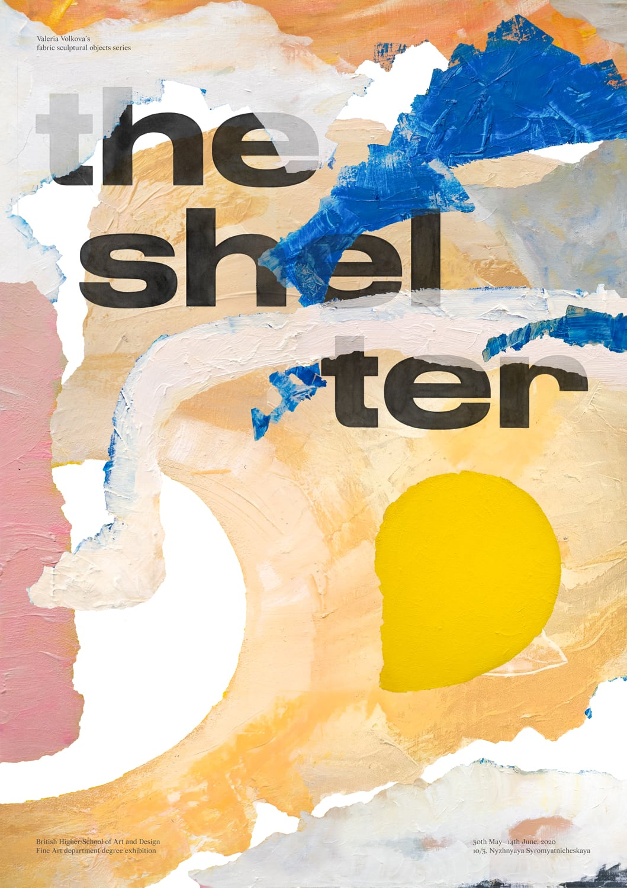
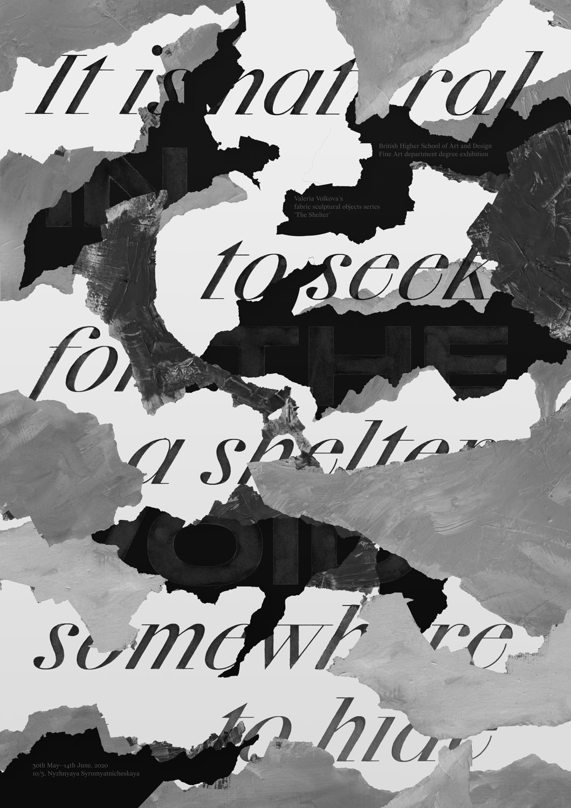
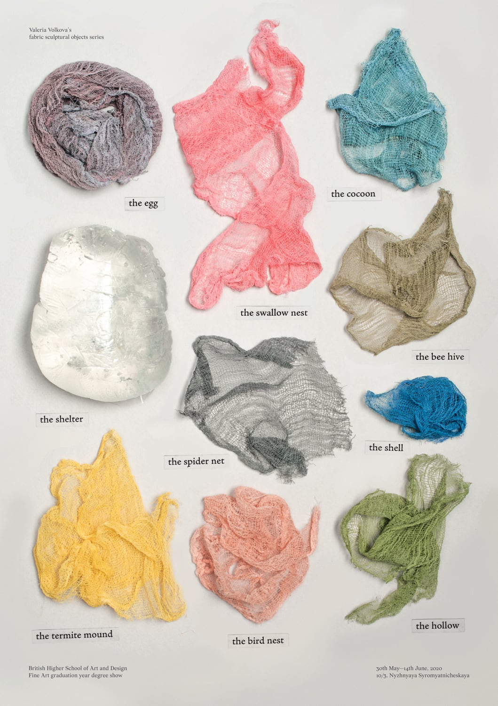

2020
3rd March

Instead of producing the image myself, I tried to manipulate with Volkova's painting in a collage manner. I am not sure it works perfectly for me, especially keeping in mind what imagery I planned in sketches, but considering the fact that this poster employs a different part of her body of work (meaning not sculptural), it starts to make sense.
14:41
20th March

Sebastian told me my previous version looks like the 60s book cover with bear claws traces, and proposed me to replace vector hand-drawn torn paper texture to real one. Instead, I used some pieces from Volkova's painting again. Maybe to redesign later. Reminds me of layered wallpaper though.
16:56
5th May

Last poster layed out as a photograph. After a huge gap, I decided to finalise everything before assessment. I love how this photographic nature of an image (in comparison with scanned one) contributes to the perception of volume, especially the gel piece with its semi-transparent texture and bigger shadow. All at once every part starts working as an opposition of an empty shell and a solid inside.
19:24